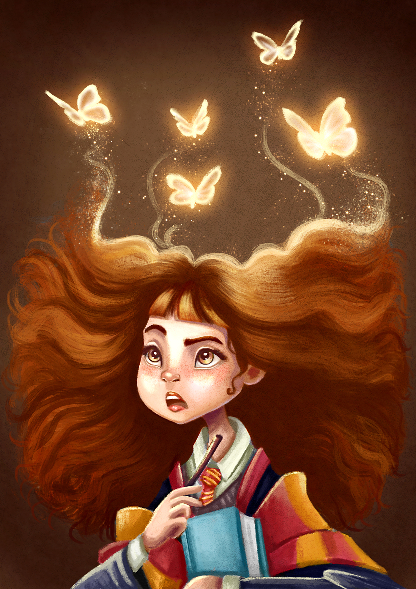

- Nome: Harry Potter
- Altura: 1.82
- Casa: Grifinória
- Bruxo: Sim
- Varinha: azevinho e pena de cauda de fênix

- Nome: Alvo Dumbledore
- Altura: 1.80
- Casa: Grifinória
- Bruxo: Sim
- Varinha: sabugueiro e pelo de testrálio

- Nome: Hermione Granger
- Altura: 1.67
- Casa: Grifinória
- Bruxo: Sim
- Varinha: videira e fibra de coração de dragão

- Nome: Rony Weasley
- Altura: 1.87
- Casa: Grifinória
- Bruxo: Sim
- Varinha: freixo e pelo de unicornio

- Nome: Severo Snape
- Altura: 1.85
- Casa: Sonserina
- Bruxo: Sim
- Varinha: silver lime e dragão
- Nome: Tom Riddle
- Altura: 1.80
- Casa: Sonserina
- Bruxo: Sim
- Varinha: teixo e pena de cauda de fênix